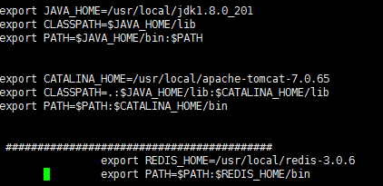
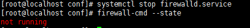

jdk:

解压：
tar zxvf jdk-8u144-linux-x64.tar.gz
执行：vi /etc/profile
export JAVA_HOME=/usr/local/jdk1.8.0_201
export CLASSPATH=$JAVA_HOME/lib
export PATH=$JAVA_HOME/bin:$PATH
让配置文件立刻生效
source /etc/profile
tomcat:
在/opt/目录下执行：mkdir soft
tar -zxvf apache-tomcat-7.0.65.tar.gz -C /opt/soft/ //解压到/opt/soft/ 目录下
cd /opt/soft/
mv apache-tomcat-7.0.65/ tomcat7 //修改文件夹的名字
cd tomcat7/ //进入到tomcat7目录中
pwd //查看当前目录的全路径
vim /etc/profile
export JAVA_HOME=/usr/java/jdk1.7.0_67
export CLASSPATH=.:$JAVA_HOME/jre/lib/rt.jar:$JAVA_HOME/lib/dt.jar:$JAVA_HOME/lib/tools.jar
export PATH=$PATH:$JAVA_HOME/bin
export CATALINA_HOME=/opt/soft/tomcat7
export PATH=$PATH:$CATALINA_HOME/bin
startup.sh启动tomcat
ps -ef |grep tomcat 查看tomcat是否已经启动！
mysql:
1. 使用root用户: su root
2. 安装
yum install mysql（这是安装的mysql的客户端！！！）
yum install mysql-server 这是安装的mysql的服务端！！！）
yum install mysql-devel（可选）
3. 修改配置信息，添加: vim /etc/my.cnf
(添加一个mysql节点)
[mysql]
default-character-set=utf8
[mysqld]
character-set-server=utf8
lower_case_table_names=1
4. 启动mysql：service mysqld restart/stop/start
5. 配置超级用户名和密码， mysqladmin -u root password 123456
6. root用户登录mysql -u root -p 123456
7. 创建mysql用户：create user 'hive' identified by 'hive';
8. 授权：grant all privileges on *.* to 'hive'@'%' with grant option
9. flush privileges;
10. 重启一下这个mysql服务。
11. 使用hive用户创建数据库并修改连接信息。
create database hive;
redis:
1. yum install gcc-c++
2. 解压redis //解压路径
tar -zxvf redis-5.0.5.tar.gz -C /opt/install/
3. 进入redis解压目录
cd /opt/install/redis-5.0.5
4.编译 make（先装gcc）
5.安装：make install PREFIX=/usr/local/redis //指定redis配置路径
6.配置redis的环境变量：
vi /etc/profile
################################
REDIS_HOME
##################################
export REDIS_HOME=/usr/local/redis
export PATH=$PATH:$REDIS_HOME/bin
7.source ~/.bash_profile //刷新配置文件
8.设置服务器端作为后台服务进程启动
1.1 : cp /opt/install/redis-5.0.5/redis.conf /usr/local/redis/bin/
1.2 ：cd /usr/local/redis/bin/
1.3 vi redis.conf
设置：daemonize yes
1.4 redis-server redis.conf配置文件的路径【相对路径、绝对路径】
vi redis.conf
设置：daemonize yes
9.加载redis.conf配置文件启动
./redis-server redis.conf
关闭redis
./redis-cli shutdown
edis命令行客户端操作
./redis-cli -h IP地址 -p 端口号
zookeeper:
解压缩压缩包
tar -zxvf zookeeper-3.4.10.tar.gz
进入conf目录 ，把 zoo_sample.cfg 改名为 zoo.cfg
进入bin，开启zookeeper
zkServer.sh start
关闭
zkServer.sh stop
查看状态：
zkServer.sh status
防火墙：zookeeper做单机版，可以正常启动；但是zookeeper做集群后启动不了，大部分原因是防火墙未关闭。
centos的关闭防火墙方法比较独立。
systemctl stop firewalld.service
查看防火墙关闭状态：
firewall-cmd --state
